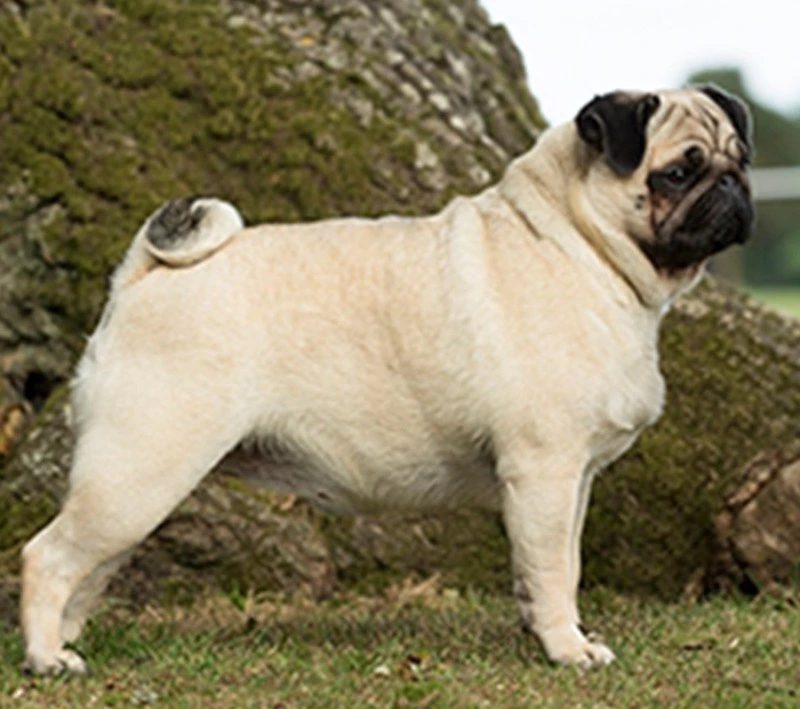

DNA
When we adopted Jak, as a Jack Russell cross, we'd got him a DNA test. We were getting tests for ourselves and were curious about his heritage too. We'd wondered what he'd been crossed with, apart from a sloth.
As it turned out, he was two-thirds Chihuahua, with contributions from Yorkshire Terriers, Russell Terriers and Miniature Pinschers. And no trace of Corgi as we'd imagined there might be.
So, with a new dog on the block, we acquired another DNA test.
Nikita was quite accommodating in allowing us to rub the small bristled brushes around her gums and cheeks.They were packaged up, posted off and we settled down to wait.
It didn't take long for the Wisdom Panel email to drop into my inbox. And even less time for me to open it up and log in to check the results.
They were a surprise! She has 16 breeds in her ancestry!
She's 61% terrier, but it's an eclectic mix of 10 terrier breeds.
She's 35% 'companion' breeds.
With the remaining 4% being made up by the 'sporting' breeds of English Springer Spaniels and Labrador Retrievers. 2% from each. She is very fast so that heritage is coming through.
Nikita's largest DNA block is Pug (31%). The other 'companion' breeds of Papillon and Tibetan Spaniel contribute only 2% each.
And as for the terriers, we have:
- Border Terrier - 14%
- Chihuahua - 12%
- Parson Russell Terrier - 10%
- Yorkshire Terrier - 5%
- Wire Fox Terrier - 5%
- Lakeland Terrier - 3%
- Patterdale Terrier - 3%
- Russell Terrier - 3%
- Smooth Fox Terrier - 2%
- Tenterfield Terrier - 2%
- Sealyham Terrier - 2%
So all of these


Go to make this little bundle of mischief!